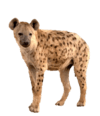
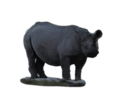
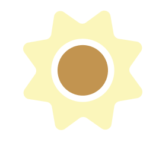
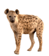
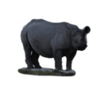
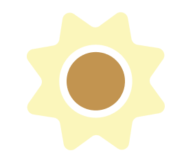

The impact of species extinction
The United Nations reports biodiversity is declining faster than ever. Biodiversity supports our environment’s natural systems, and when these systems are disrupted, it affects everyone.
Human activities, like massive deforestation, destroy habitats and cause species loss. Displaced species come into more contact with humans, raising the risk of "zoonotic spillover"—diseases jumping from animals to people. Over 75% of infectious diseases in humans originated this way.
Species loss also threatens agriculture. Food webs are interconnected, so losing one species can trigger losses in others. For example, the UN Food and Agricultural Organization warns that threats to bees could disrupt global agriculture.
Nature also fuels healthcare: many medicines come from natural sources. Habitat destruction risks halting medical advances, as 70% of cancer drugs are natural or bio-inspired.
What can be done
Conservation is crucial. Restoring biodiversity helps slow climate change by improving carbon sequestration and protecting ecosystems that shield against storms and flooding.
Islands are biodiversity hotspots, hosting 20% of Earth’s species on just 4% of its surface, but they also face 80% of species extinctions.
Sustainable agriculture, fishing, shipping, and land use are key. Croplands now expand 58 times faster than 20 years ago, mainly to feed livestock due to high meat demand. Overfishing, ocean acidification, and plastic pollution add further threats.
Respecting indigenous knowledge and rights is vital. Indigenous peoples have long been environmental stewards, and research shows biodiversity thrives where they manage the land—yet few countries recognize their land rights.
 




